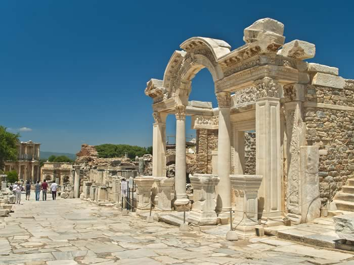

HOME
ROMANS
1 CORINTHIANS
2 CORINTHIANS
GALATIANS
EPHESIANS
PHILIPPIANS
COLOSSIANS
1 THESSALONIANS
2 THESSALONIANS
1 TIMOTHY
2 TIMOTHY
TITUS

EPHESIANS
1
1
EPHESIANS 1
C
E
N
T
E
R
1 Paul, an apostle of Christ Jesus by the will of God,
To God’s holy people in Ephesus, the faithful in Christ Jesus:
2 Grace and peace to you from God our Father and the Lord Jesus Christ.
Praise for Spiritual Blessings in Christ
3 Praise be to the God and Father of our Lord Jesus Christ, who has blessed us in the heavenly realms with every spiritual blessing in Christ. 4 For he chose us in him before the creation of the world to be holy and blameless in his sight. In love 5 he predestined us for adoption to sonship through Jesus Christ, in accordance with his pleasure and will— 6 to the praise of his glorious grace, which he has freely given us in the One he loves. 7 In him we have redemption through his blood, the forgiveness of sins, in accordance with the riches of God’s grace 8 that he lavished on us. With all wisdom and understanding, 9 he made known to us the mystery of his will according to his good pleasure, which he purposed in Christ, 10 to be put into effect when the times reach their fulfillment—to bring unity to all things in heaven and on earth under Christ.
11 In him we were also chosen, having been predestined according to the plan of him who works out everything in conformity with the purpose of his will, 12 in order that we, who were the first to put our hope in Christ, might be for the praise of his glory. 13 And you also were included in Christ when you heard the message of truth, the gospel of your salvation. When you believed, you were marked in him with a seal, the promised Holy Spirit, 14 who is a deposit guaranteeing our inheritance until the redemption of those who are God’s possession—to the praise of his glory.
Thanksgiving and Prayer
15 For this reason, ever since I heard about your faith in the Lord Jesus and your love for all God’s people, 16 I have not stopped giving thanks for you, remembering you in my prayers. 17 I keep asking that the God of our Lord Jesus Christ, the glorious Father, may give you the Spirit of wisdom and revelation, so that you may know him better. 18 I pray that the eyes of your heart may be enlightened in order that you may know the hope to which he has called you, the riches of his glorious inheritance in his holy people, 19 and his incomparably great power for us who believe. That power is the same as the mighty strength 20 he exerted when he raised Christ from the dead and seated him at his right hand in the heavenly realms, 21 far above all rule and authority, power and dominion, and every name that is invoked, not only in the present age but also in the one to come. 22 And God placed all things under his feet and appointed him to be head over everything for the church, 23 which is his body, the fullness of him who fills everything in every way.
EPHESIANS 2
Made Alive in Christ
2 As for you, you were dead in your transgressions and sins, 2 in which you used to live when you followed the ways of this world and of the ruler of the kingdom of the air, the spirit who is now at work in those who are disobedient. 3 All of us also lived among them at one time, gratifying the cravings of our flesh and following its desires and thoughts. Like the rest, we were by nature deserving of wrath. 4 But because of his great love for us, God, who is rich in mercy, 5 made us alive with Christ even when we were dead in transgressions—it is by grace you have been saved. 6 And God raised us up with Christ and seated us with him in the heavenly realms in Christ Jesus, 7 in order that in the coming ages he might show the incomparable riches of his grace, expressed in his kindness to us in Christ Jesus. 8 For it is by grace you have been saved, through faith—and this is not from yourselves, it is the gift of God— 9 not by works, so that no one can boast. 10 For we are God’s handiwork, created in Christ Jesus to do good works, which God prepared in advance for us to do.
Jew and Gentile Reconciled Through Christ
11 Therefore, remember that formerly you who are Gentiles by birth and called “uncircumcised” by those who call themselves “the circumcision” (which is done in the body by human hands)— 12 remember that at that time you were separate from Christ, excluded from citizenship in Israel and foreigners to the covenants of the promise, without hope and without God in the world. 13 But now in Christ Jesus you who once were far away have been brought near by the blood of Christ.
14 For he himself is our peace, who has made the two groups one and has destroyed the barrier, the dividing wall of hostility, 15 by setting aside in his flesh the law with its commands and regulations. His purpose was to create in himself one new humanity out of the two, thus making peace, 16 and in one body to reconcile both of them to God through the cross, by which he put to death their hostility. 17 He came and preached peace to you who were far away and peace to those who were near. 18 For through him we both have access to the Father by one Spirit.
19 Consequently, you are no longer foreigners and strangers, but fellow citizens with God’s people and also members of his household, 20 built on the foundation of the apostles and prophets, with Christ Jesus himself as the chief cornerstone. 21 In him the whole building is joined together and rises to become a holy temple in the Lord. 22 And in him you too are being built together to become a dwelling in which God lives by his Spirit.

EPHESIANS 3
God’s Marvelous Plan for the Gentiles
3 For this reason I, Paul, the prisoner of Christ Jesus for the sake of you Gentiles—
2 Surely you have heard about the administration of God’s grace that was given to me for you, 3 that is, the mystery made known to me by revelation, as I have already written briefly. 4 In reading this, then, you will be able to understand my insight into the mystery of Christ, 5 which was not made known to people in other generations as it has now been revealed by the Spirit to God’s holy apostles and prophets. 6 This mystery is that through the gospel the Gentiles are heirs together with Israel, members together of one body, and sharers together in the promise in Christ Jesus.
7 I became a servant of this gospel by the gift of God’s grace given me through the working of his power. 8 Although I am less than the least of all the Lord’s people, this grace was given me: to preach to the Gentiles the boundless riches of Christ, 9 and to make plain to everyone the administration of this mystery, which for ages past was kept hidden in God, who created all things. 10 His intent was that now, through the church, the manifold wisdom of God should be made known to the rulers and authorities in the heavenly realms, 11 according to his eternal purpose that he accomplished in Christ Jesus our Lord. 12 In him and through faith in him we may approach God with freedom and confidence. 13 I ask you, therefore, not to be discouraged because of my sufferings for you, which are your glory.
A Prayer for the Ephesians
14 For this reason I kneel before the Father, 15 from whom every family in heaven and on earth derives its name. 16 I pray that out of his glorious riches he may strengthen you with power through his Spirit in your inner being, 17 so that Christ may dwell in your hearts through faith. And I pray that you, being rooted and established in love, 18 may have power, together with all the Lord’s holy people, to grasp how wide and long and high and deep is the love of Christ, 19 and to know this love that surpasses knowledge—that you may be filled to the measure of all the fullness of God.
20 Now to him who is able to do immeasurably more than all we ask or imagine, according to his power that is at work within us, 21 to him be glory in the church and in Christ Jesus throughout all generations, for ever and ever! Amen.
EPHESIANS 4
Unity and Maturity in the Body of Christ
4 As a prisoner for the Lord, then, I urge you to live a life worthy of the calling you have received. 2 Be completely humble and gentle; be patient, bearing with one another in love. 3 Make every effort to keep the unity of the Spirit through the bond of peace. 4 There is one body and one Spirit, just as you were called to one hope when you were called; 5 one Lord, one faith, one baptism; 6 one God and Father of all, who is over all and through all and in all.
7 But to each one of us grace has been given as Christ apportioned it. 8 This is why it says:
“When he ascended on high,
he took many captives
and gave gifts to his people.”
9 (What does “he ascended” mean except that he also descended to the lower, earthly regions? 10 He who descended is the very one who ascended higher than all the heavens, in order to fill the whole universe.) 11 So Christ himself gave the apostles, the prophets, the evangelists, the pastors and teachers, 12 to equip his people for works of service, so that the body of Christ may be built up 13 until we all reach unity in the faith and in the knowledge of the Son of God and become mature, attaining to the whole measure of the fullness of Christ.
14 Then we will no longer be infants, tossed back and forth by the waves, and blown here and there by every wind of teaching and by the cunning and craftiness of people in their deceitful scheming. 15 Instead, speaking the truth in love, we will grow to become in every respect the mature body of him who is the head, that is, Christ. 16 From him the whole body, joined and held together by every supporting ligament, grows and builds itself up in love, as each part does its work.
Instructions for Christian Living
17 So I tell you this, and insist on it in the Lord, that you must no longer live as the Gentiles do, in the futility of their thinking. 18 They are darkened in their understanding and separated from the life of God because of the ignorance that is in them due to the hardening of their hearts. 19 Having lost all sensitivity, they have given themselves over to sensuality so as to indulge in every kind of impurity, and they are full of greed.
20 That, however, is not the way of life you learned 21 when you heard about Christ and were taught in him in accordance with the truth that is in Jesus. 22 You were taught, with regard to your former way of life, to put off your old self, which is being corrupted by its deceitful desires; 23 to be made new in the attitude of your minds; 24 and to put on the new self, created to be like God in true righteousness and holiness.
25 Therefore each of you must put off falsehood and speak truthfully to your neighbor, for we are all members of one body. 26 “In your anger do not sin”: Do not let the sun go down while you are still angry, 27 and do not give the devil a foothold. 28 Anyone who has been stealing must steal no longer, but must work, doing something useful with their own hands, that they may have something to share with those in need.
29 Do not let any unwholesome talk come out of your mouths, but only what is helpful for building others up according to their needs, that it may benefit those who listen. 30 And do not grieve the Holy Spirit of God, with whom you were sealed for the day of redemption. 31 Get rid of all bitterness, rage and anger, brawling and slander, along with every form of malice. 32 Be kind and compassionate to one another, forgiving each other, just as in Christ God forgave you.
EPHESIANS 5
5 Follow God’s example, therefore, as dearly loved children 2 and walk in the way of love, just as Christ loved us and gave himself up for us as a fragrant offering and sacrifice to God.
3 But among you there must not be even a hint of sexual immorality, or of any kind of impurity, or of greed, because these are improper for God’s holy people. 4 Nor should there be obscenity, foolish talk or coarse joking, which are out of place, but rather thanksgiving. 5 For of this you can be sure: No immoral, impure or greedy person—such a person is an idolater—has any inheritance in the kingdom of Christ and of God. 6 Let no one deceive you with empty words, for because of such things God’s wrath comes on those who are disobedient. 7 Therefore do not be partners with them.
8 For you were once darkness, but now you are light in the Lord. Live as children of light 9 (for the fruit of the light consists in all goodness, righteousness and truth) 10 and find out what pleases the Lord. 11 Have nothing to do with the fruitless deeds of darkness, but rather expose them. 12 It is shameful even to mention what the disobedient do in secret. 13 But everything exposed by the light becomes visible—and everything that is illuminated becomes a light. 14 This is why it is said:
“Wake up, sleeper,
rise from the dead,
and Christ will shine on you.”
15 Be very careful, then, how you live—not as unwise but as wise, 16 making the most of every opportunity, because the days are evil. 17 Therefore do not be foolish, but understand what the Lord’s will is. 18 Do not get drunk on wine, which leads to debauchery. Instead, be filled with the Spirit, 19 speaking to one another with psalms, hymns, and songs from the Spirit. Sing and make music from your heart to the Lord, 20 always giving thanks to God the Father for everything, in the name of our Lord Jesus Christ.
Instructions for Christian Households
21 Submit to one another out of reverence for Christ.
22 Wives, submit yourselves to your own husbands as you do to the Lord. 23 For the husband is the head of the wife as Christ is the head of the church, his body, of which he is the Savior. 24 Now as the church submits to Christ, so also wives should submit to their husbands in everything.
25 Husbands, love your wives, just as Christ loved the church and gave himself up for her 26 to make her holy, cleansing her by the washing with water through the word, 27 and to present her to himself as a radiant church, without stain or wrinkle or any other blemish, but holy and blameless. 28 In this same way, husbands ought to love their wives as their own bodies. He who loves his wife loves himself. 29 After all, no one ever hated their own body, but they feed and care for their body, just as Christ does the church— 30 for we are members of his body. 31 “For this reason a man will leave his father and mother and be united to his wife, and the two will become one flesh.” 32 This is a profound mystery—but I am talking about Christ and the church. 33 However, each one of you also must love his wife as he loves himself, and the wife must respect her husband.
EPHESIANS 6
6 Children, obey your parents in the Lord, for this is right. 2 “Honor your father and mother”—which is the first commandment with a promise— 3 “so that it may go well with you and that you may enjoy long life on the earth.”
4 Fathers, do not exasperate your children; instead, bring them up in the training and instruction of the Lord.
5 Slaves, obey your earthly masters with respect and fear, and with sincerity of heart, just as you would obey Christ. 6 Obey them not only to win their favor when their eye is on you, but as slaves of Christ, doing the will of God from your heart. 7 Serve wholeheartedly, as if you were serving the Lord, not people, 8 because you know that the Lord will reward each one for whatever good they do, whether they are slave or free.
9 And masters, treat your slaves in the same way. Do not threaten them, since you know that he who is both their Master and yours is in heaven, and there is no favoritism with him.
The Armor of God
10 Finally, be strong in the Lord and in his mighty power. 11 Put on the full armor of God, so that you can take your stand against the devil’s schemes. 12 For our struggle is not against flesh and blood, but against the rulers, against the authorities, against the powers of this dark world and against the spiritual forces of evil in the heavenly realms. 13 Therefore put on the full armor of God, so that when the day of evil comes, you may be able to stand your ground, and after you have done everything, to stand. 14 Stand firm then, with the belt of truth buckled around your waist, with the breastplate of righteousness in place, 15 and with your feet fitted with the readiness that comes from the gospel of peace. 16 In addition to all this, take up the shield of faith, with which you can extinguish all the flaming arrows of the evil one. 17 Take the helmet of salvation and the sword of the Spirit, which is the word of God.
18 And pray in the Spirit on all occasions with all kinds of prayers and requests. With this in mind, be alert and always keep on praying for all the Lord’s people. 19 Pray also for me, that whenever I speak, words may be given me so that I will fearlessly make known the mystery of the gospel, 20 for which I am an ambassador in chains. Pray that I may declare it fearlessly, as I should.
Final Greetings
21 Tychicus, the dear brother and faithful servant in the Lord, will tell you everything, so that you also may know how I am and what I am doing. 22 I am sending him to you for this very purpose, that you may know how we are, and that he may encourage you.
23 Peace to the brothers and sisters, and love with faith from God the Father and the Lord Jesus Christ. 24 Grace to all who love our Lord Jesus Christ with an undying love.
https://redeemerdetroit.com/
https://www.christianheadlines.com/
The church of Ephesis had many strong believers that came together in the church and represented Christ. Just as they were all centered around Christ, and he is the ultimate center of all of our lives, we in modern times must also come together.